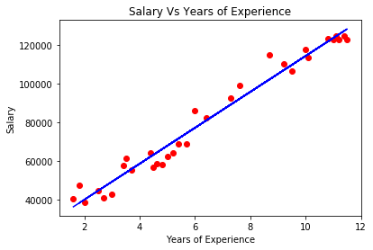
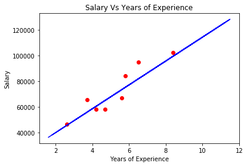

Python 3.6.5 |Anaconda, Inc.| (default, Mar 29 2018, 13:32:41) [MSC v.1900 64 bit (AMD64)]
Type "copyright", "credits" or "license" for more information.
IPython 6.4.0 -- An enhanced Interactive Python.
In [1]:
In [1]: runfile('C:/Users/prachi/.spyder-py3/temp.py', wdir='C:/Users/prachi/.spyder-py3')
0
In [2]: runfile('C:/Users/prachi/.spyder-py3/temp.py', wdir='C:/Users/prachi/.spyder-py3')
28
In [3]: dataset = pd.read_csv('Salary_Data.csv')
Traceback (most recent call last):
File "<ipython-input-3-d5c438c2ac18>", line 1, in <module>
dataset = pd.read_csv('Salary_Data.csv')
NameError: name 'pd' is not defined
In [4]:
In [4]: import pandas as pd
In [5]: dataset = pd.read_csv('Salary_Data.csv')
Traceback (most recent call last):
File "<ipython-input-5-d5c438c2ac18>", line 1, in <module>
dataset = pd.read_csv('Salary_Data.csv')
File "C:\Users\prachi\Anaconda3\lib\site-packages\pandas\io\parsers.py", line 678, in parser_f
return _read(filepath_or_buffer, kwds)
File "C:\Users\prachi\Anaconda3\lib\site-packages\pandas\io\parsers.py", line 440, in _read
parser = TextFileReader(filepath_or_buffer, **kwds)
File "C:\Users\prachi\Anaconda3\lib\site-packages\pandas\io\parsers.py", line 787, in __init__
self._make_engine(self.engine)
File "C:\Users\prachi\Anaconda3\lib\site-packages\pandas\io\parsers.py", line 1014, in _make_engine
self._engine = CParserWrapper(self.f, **self.options)
File "C:\Users\prachi\Anaconda3\lib\site-packages\pandas\io\parsers.py", line 1708, in __init__
self._reader = parsers.TextReader(src, **kwds)
File "pandas\_libs\parsers.pyx", line 384, in pandas._libs.parsers.TextReader.__cinit__
File "pandas\_libs\parsers.pyx", line 695, in pandas._libs.parsers.TextReader._setup_parser_source
FileNotFoundError: File b'Salary_Data.csv' does not exist
In [6]:
In [6]: dataset = pd.read_csv('Salary_Data.csv')
Traceback (most recent call last):
File "<ipython-input-6-d5c438c2ac18>", line 1, in <module>
dataset = pd.read_csv('Salary_Data.csv')
File "C:\Users\prachi\Anaconda3\lib\site-packages\pandas\io\parsers.py", line 678, in parser_f
return _read(filepath_or_buffer, kwds)
File "C:\Users\prachi\Anaconda3\lib\site-packages\pandas\io\parsers.py", line 440, in _read
parser = TextFileReader(filepath_or_buffer, **kwds)
File "C:\Users\prachi\Anaconda3\lib\site-packages\pandas\io\parsers.py", line 787, in __init__
self._make_engine(self.engine)
File "C:\Users\prachi\Anaconda3\lib\site-packages\pandas\io\parsers.py", line 1014, in _make_engine
self._engine = CParserWrapper(self.f, **self.options)
File "C:\Users\prachi\Anaconda3\lib\site-packages\pandas\io\parsers.py", line 1708, in __init__
self._reader = parsers.TextReader(src, **kwds)
File "pandas\_libs\parsers.pyx", line 384, in pandas._libs.parsers.TextReader.__cinit__
File "pandas\_libs\parsers.pyx", line 695, in pandas._libs.parsers.TextReader._setup_parser_source
FileNotFoundError: File b'Salary_Data.csv' does not exist
In [7]:
In [7]: dataset = pd.read_csv('Salary_Data.csv')
In [8]: import numpy as np
...: import matplotlib.pyplot as plt
...: import pandas as pd
In [9]: runfile('C:/Users/prachi/Desktop/harsh/machine learning/udemy_linearRegression/simple-linear-regression.py', wdir='C:/Users/prachi/Desktop/harsh/machine learning/udemy_linearRegression')


In [10]: Z = dataset.iloc[:,0].values
In [11]: pd.DataFrame(Y_test.flatten(),Y_pred.flatten())
Out[11]:
0
75329.657802 84088
73469.698299 67029
81839.516064 94940
45570.305748 46525
55800.083017 65445
65099.880533 57957
99509.131346 102302
60449.981775 58189
In [12]: pd.DataFrame('A':Y_test.flatten(),'P':Y_pred.flatten())
File "<ipython-input-12-eee5196f275e>", line 1
pd.DataFrame('A':Y_test.flatten(),'P':Y_pred.flatten())
^
SyntaxError: invalid syntax
In [13]:
In [13]: pd.DataFrame({'A':Y_test.flatten(),'P':Y_pred.flatten()})
Out[13]:
A P
0 84088 75329.657802
1 67029 73469.698299
2 94940 81839.516064
3 46525 45570.305748
4 65445 55800.083017
5 57957 65099.880533
6 102302 99509.131346
7 58189 60449.981775
In [14]: